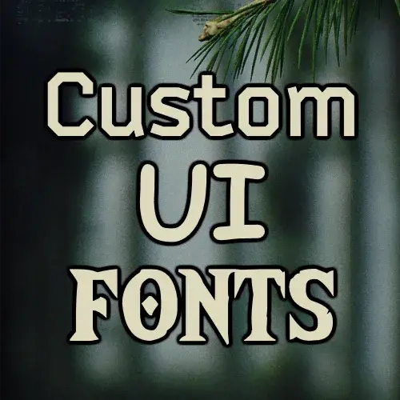
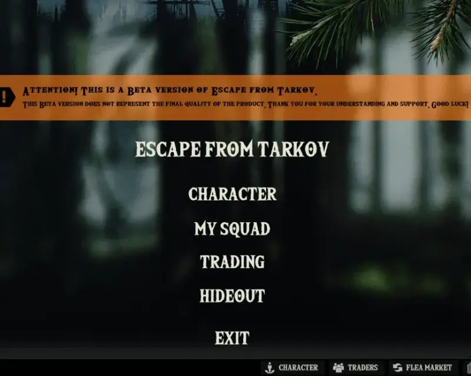

Mod
Custom UI Fonts
- Downloads
- 219
- Favourites
- 3
- Mod lists
- 6
Custom UI Fonts
Swap your in-game UI font with a custom font

Known Bugs
- Some Fonts might not fit properly on certain UI elements
- Some UI elements (example “Item ShortName” disappear when having a specific font selected (example: gg sans Bold)
Features
- Change your UI font instantly from F12 menu
- No game restart required when switching fonts
- Includes a growing library of custom fonts
Planned Features
- Global Font Scale Slider for Both Vanilla Fonts & Custom Fonts
- Addtional Fonts, Please request some :3
- Text Style / Weight Toggles - extra bolding, letter spacing, or line height adjustments
- More
Credits
Special thanks to:
- Saga for fine-tuning code and helping with questions
- Terkoiz for Thumbnail & Mentoring
Included Fonts & Credits
Version 1.0 includes the following fonts:
Support/Requests
Found a bug or have an font request?
- Bug Reports: Please open an issue on the GitHub Issues page
- Feature Requests: Feel free to suggest new features or request additional fonts
- Please avoid posting log files in Forge comments. GitHub Issues make it much easier to troubleshoot problems
Version
1.0.0
SPT ~4.0.0
Fika: unknown
219 downloads1.8 MB
4.0x Version
VirusTotal: report 1